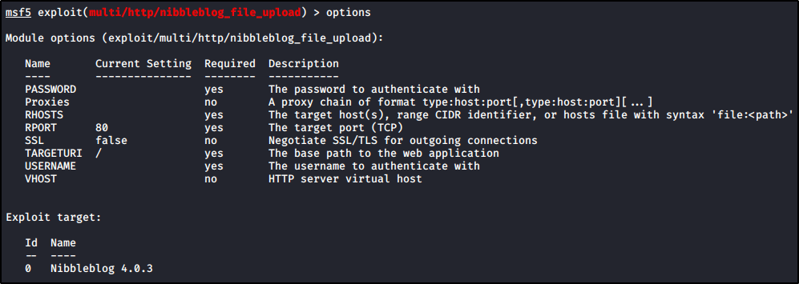

Searching for mode default pages of Nibblepage, we see that Nibbleblog have an Admin Page (admin.php):


We can see to do something with dirbuster...


Or just roaming.
Roaming gave us the option page of Nibbleblog, with his version (4.0.3)


Just go back to Metasploit and try some USERNAME / PASSWORD to get the exploit